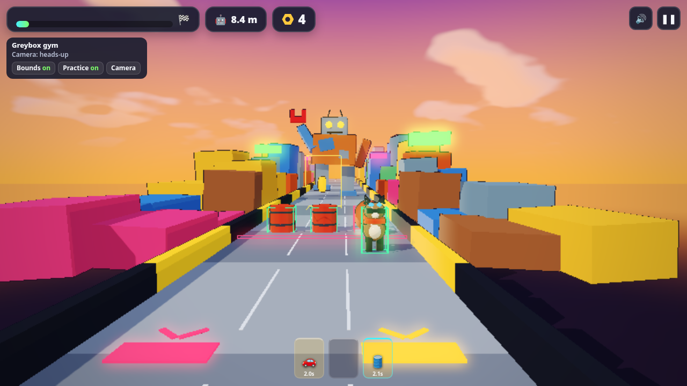
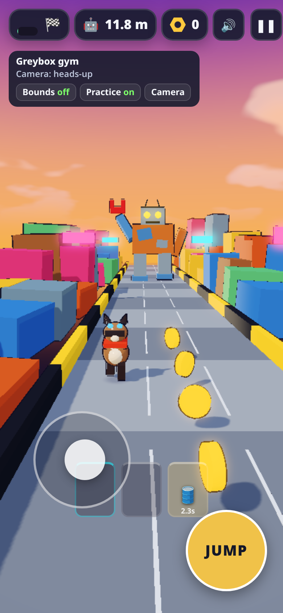
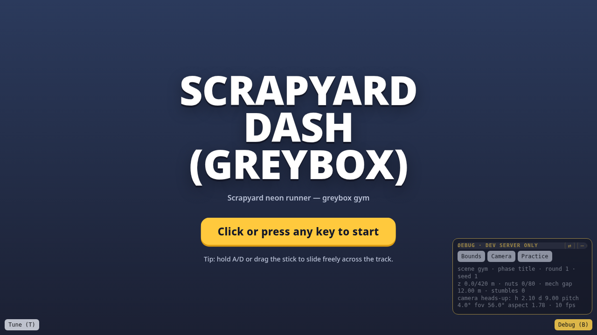
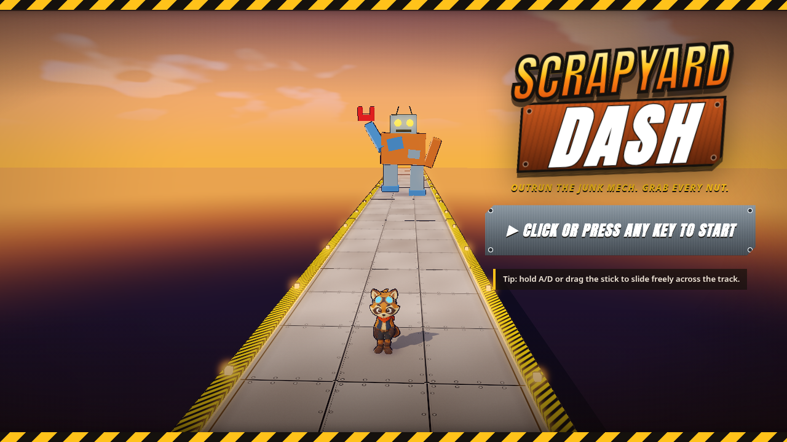
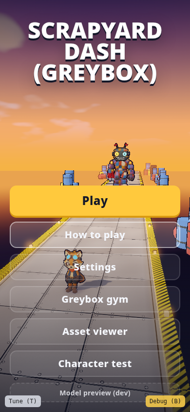
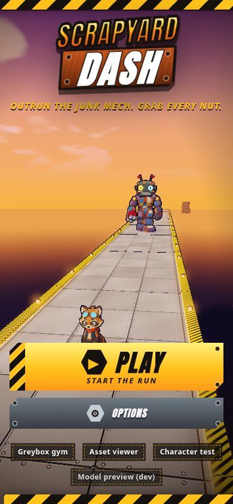

UI elements
The UI went through three rounds, each set off by one short note from Chong-U: give the player more warning, make the menu feel like a game, then cut what isn't needed.
Round 1 · Heads-up HUD (Nov 4 morning)

share/media/kickoff/desk-4x3.png
share/media/kickoff/gym-headsup-desktop.png- Camera: about 5.6 m of track visible ahead, up from about 1.1 m.
- Lane radar warns 3.5 s ahead (was 2.2 s), plus in-world lane lamps and audio pings.
- The bottom control strip was removed; controls moved to How to Play / Help.
- HUD keeps three numbers: nut count, progress to the finish, and the mech gap, which turns red under 4 m.

share/media/kickoff/gym-headsup-phone.pngRound 2 · A main menu that looks like the game (Nov 4 evening)

share/media/menu-redesign/before-splash.png
share/media/menu-redesign/after-splash.png
share/media/menu-redesign/before-menu.png
share/media/menu-redesign/after-menu.pngWhat changed in 987b55b:
- A game-side skin (
game/src/menu-skin.ts+style.css): stamped SCRAPYARD / DASH wordmark, hazard tape, riveted steel-plate buttons, scrap-metal popups, a portrait layout. - Title and menu share one column over the live 3D scene, so the wordmark never moves.
- The splash → menu change is now a hard cut: no logo drop, no entry cascade.
- Menu steps with left/right on keys and gamepad.
- Sounds swapped to match: chunky industrial UI clicks, a scrap-metal crash instead of the cartoon one, an industrial game-over sting with "no trombone", a new menu theme. See ElevenLabs audio.

share/media/menu-redesign/before-phone-menu.png
share/media/menu-redesign/after-phone-menu.pngRound 3 · Cut How to Play (Nov 5)
share/media/menu-redesign/after-menu.png
share/media/menu-redesign/nohelp-menu.pngThe main menu is now PLAY and OPTIONS. How to Play still lives on the pause card for anyone who wants it, so nothing is lost; it's just off the path to the first run. The small dev-only entries (Greybox gym, Asset viewer, Character test) show only on the dev server.

share/media/menu-redesign/nohelp-phone-menu.pngPatterns worth stealing
- Pause card as the home for help. Teach in a place players choose to visit, not on top of the playfield.
- Menu over the live scene. The game sells itself behind the buttons.
- Before/after captures every round (
share/media/menu-redesign/) so the owner reviews pictures, not diffs. - Restyle sound together with visuals: a steel menu with cartoon clicks feels wrong.
Short, opinionated notes work. "More game like, look entirely different" plus "not the clown sound" was enough brief for a full skin, a transition change and five regenerated sounds, because the bot came back with screenshots for the next note.
Parked, not shipped (as of Nov 5, 9:45 AM HKT): pulling the menu in from the right edge and hiding the mech on the title screen, from Chong-U's 9:07 AM note.